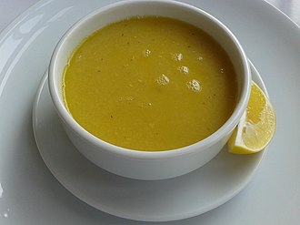
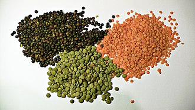

Mercimek Corbasi

Mercimek çorbası, ana malzemesi mercimek olan bir çorbadır; vejetaryen olabilir veya et içerebilir ve kabuklu veya kabuksuz kahverengi, kırmızı, sarı, yeşil veya siyah mercimek kullanabilir. Kabuğu ayıklanmış sarı ve kırmızı mercimekler pişerken parçalanarak koyu bir çorba olur. Avrupa, Latin Amerika ve Orta Doğu'da temel bir besindir.
Cesitleri

Mercimek çorbası havuç, patates, kereviz, maydanoz, domates, balkabağı, olgun muz ve soğan gibi sebzeleri içerebilir. Yaygın tatlandırıcılar sarımsak, defne yaprağı, kimyon, zeytinyağı ve sirkedir. Bazen kruton, doğranmış ot, tereyağı, zeytinyağı, krema veya yoğurt ile süslenir. Hint mercimek çorbası, çeşitli aromatik baharatlar içerir. Irak ve Levant mutfağında çorba, zerdeçal ve kimyonla tatlandırılır ve üzerine sha'iriyya (شعيرية) adı verilen kızarmış, ince vermicelli eriştesi eklenir ve sıkmak için bir limonla servis edilir. Orta Doğu'da limon suyunun eklenmesi keskin bir tat verir ve yemeğin ağırlığını azaltır.[5] Mısır'da ve Orta Doğu'da çorba servis edilmeden önce genellikle püre haline getirilir ve geleneksel olarak kışın tüketilir.[6][7]